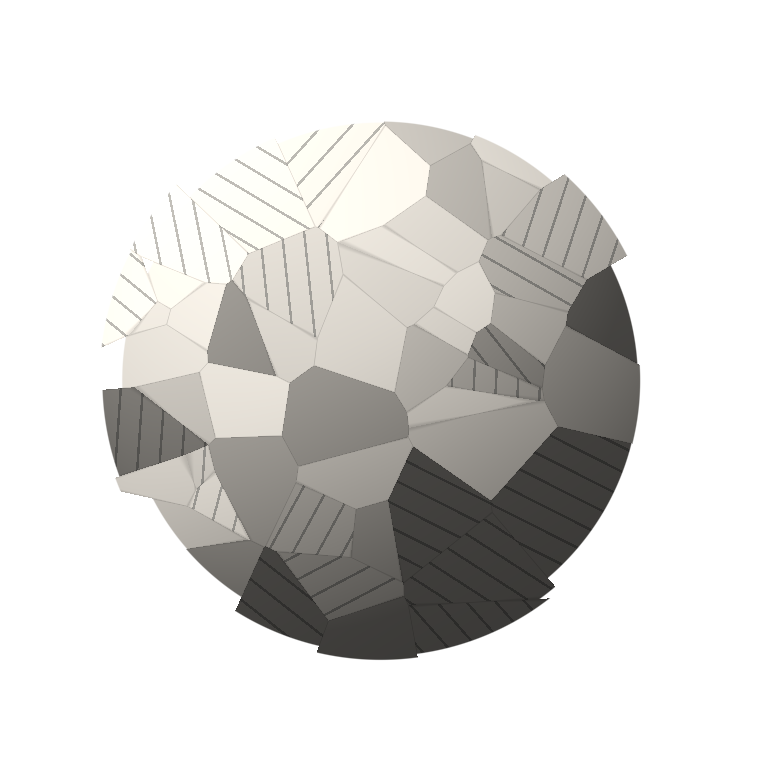

Comment montrer
un geste
Storyboard v1 · planche fixe (aucune animation). Une cellule = le moment-clé d'un plan, avec les vraies couleurs, polices et textes. Les matières (soudure, carrelage, boulangerie) sont des rendus dessinés en attendant de vraies photos ; les écrans de l'app sont des emplacements de captures à fournir.
